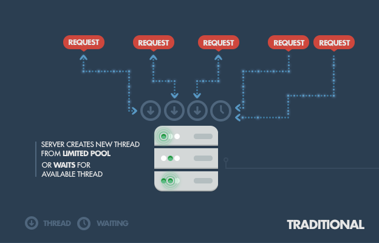
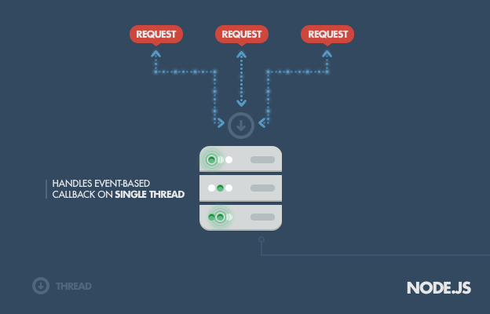

Node.js
Serverside Javascript
Created by Edward Zhu
Why node.js?
Node's goal is to provide an easy way to build scalable network applications.
What exactly is Node.js?
Built on Chrome's V8 JavaScript runtime written in C++.
Can handle thousands of concurrent connections with minimun overhead on a single process.
Uses an event-driven, non-blocking I/O model.
Traditional Web-Serving
Traditional Web-Serving
Each connection spawns a new thread.
Takes up too much system RAM.
Will eventually max out RAM availible.
Node.js Approach
Node.js Approach
Operates on a single thread.
Using non-blocking I/O calls.
Supports tens of thousands of concurrent connections.
Theory: Event Loop

Event Loop Explained
Client sends HTTP request to node.js server.
Event loop is woken up and passes request/responce to the thresad pool
Jobs run in worker thread.
Responce is sent back to main thread via callback.
Event loop returns result to client.
Theory: Non-Blocking I/O
Tranditional I/O
var result = db.query("select x from table_y");
doSomethingWith(result); // wait for result!
doSomethingWithout(result); // execution is blocked!
Non-Tranditional, Non-blocking I/O
db.query("select x from table_y", function (result){
doSomethingWith(result); //wait for result!
});
doSomethingWithout(result); //executes without any delay!
Basic Implementations
var http = require('http');
var server = http.createServer(function(req, res) {
res.writeHead(200);
res.end('Hello Http');
});
server.listen(8080);
Notice
The code doesn't exit right away.
Node programs will always run until it's certain that no further events are possible.
Step by Step
var http = require('http');
Include the http core module and assign it to a variable called http.
Step by Step
var server = http.createServer(function(req, res) {
res.writeHead(200);
res.end('Hello Http');
});
Create a variable called server by calling http.createServer.
The argument passed into this call is a closure that is called whenever an http request comes in.
Step by Step
server.listen(8080);
We call server.listen(8080) to tell node.js the port on which we want our server to run.
It's that simple!
Node Package Manager (NPM)
Node's built-in support for package management is a beloved feature by developers.
NPM Basics
Very similar to Ruby Gems.
Set of publicly available, reusable components that have all sorts of functionalities.
Simple Imports
npm install mysql
Simply install the package. In this case, mysql.
var mysql = require('mysql');
And name it a variable to use!
Popular Node Modules
express - web-dev framework
connect - HTTP server framework
mongodb - mongoDB wrappers for the MongoDB API
Jade - templating engine
Pitfalls
Heavy computation could choke up single thread, blocking incoming threads.
Developers need to be careful when allowing exceptions for Node's event loop.
When to use Node?
Creating streaming based realtime services, webchat apps, and static file transfer servers.
When you need high level of concurrency and not worried about CPU bound.
Javascript lover; using JS for both server and client side.
When NOT to use Node?
Heavy CPU intensive server side calculations.
Node is no match for enterprise level frames such as Spring(java), Django(python), and etc.
There is still a lot to improve, but it's getting better and better.
Who uses Node.js?
Yahoo!
eBay
Dow Jones